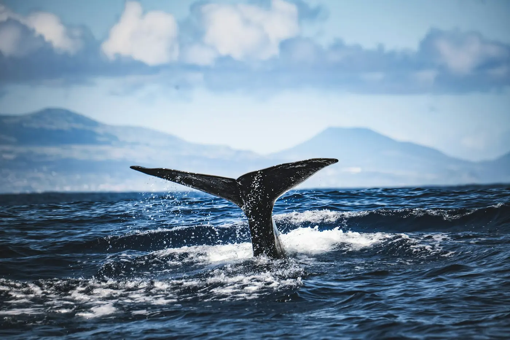
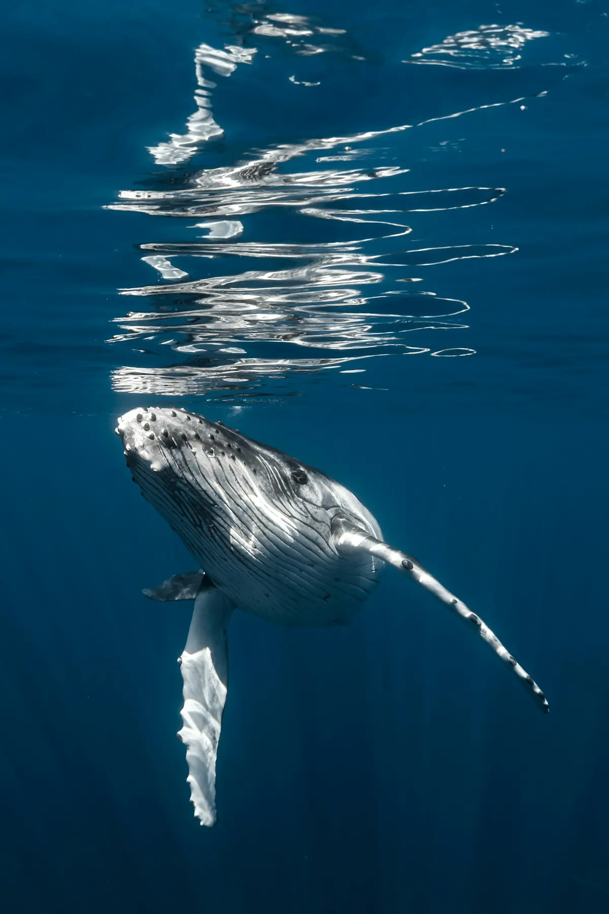
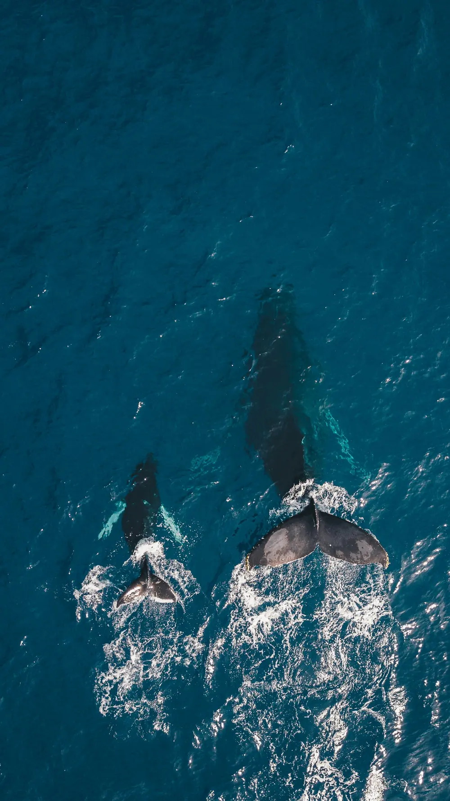
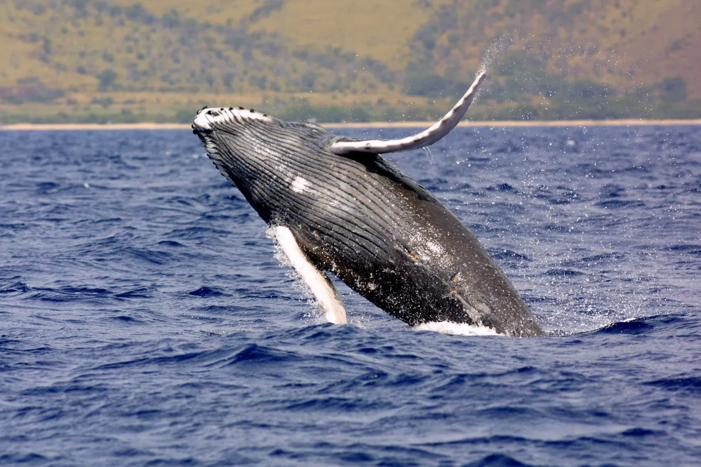

Знакомься
Какие бывают киты
Китов больше 90 видов. Одни огромные и едят крошечных рачков, другие поменьше и охотятся стаями. Дельфины — тоже киты, только маленькие.
 Фото: NOAA Fisheries
Фото: NOAA Fisheries
Синий кит
Длина
автобус 12 м
Живая энциклопедия · Глава 1
Самые большие животные, которые когда-либо жили на Земле. Листай вниз: мы нырнём от поверхности до самого дна океана, на 4 000 метров.
Вопрос на разминку
Кит живёт в воде, у него плавники и хвост. Как ты думаешь?
Знакомься
Китов больше 90 видов. Одни огромные и едят крошечных рачков, другие поменьше и охотятся стаями. Дельфины — тоже киты, только маленькие.
Фото: NOAA Fisheries
−60 м
Самцы горбатых китов исполняют длинные песни. Одна песня длится 10–20 минут, и кит может повторять её часами. Все самцы в одном районе поют одну и ту же песню, и она понемногу меняется из года в год.
Под водой звук бежит примерно в 4 раза быстрее, чем в воздухе, поэтому голоса китов разносятся очень далеко.
Вдох на поверхности
Чтобы вдохнуть, кит поднимается к поверхности и выдыхает через дыхало — ноздрю на макушке. Тёплый влажный воздух превращается в облако брызг: это и есть фонтан. У синего кита он взлетает на высоту до 9 метров, выше трёхэтажного дома.
Перед нырком кит поднимает хвост над водой. По рисунку на хвосте учёные узнают каждого горбача, как нас по отпечаткам пальцев.
Кашалот обычно остаётся под водой 45–60 минут без вдоха. А ты?
Нажми, вдохни и не дыши. Нажми ещё раз, когда выдохнешь.


Солнечный свет пробивается сквозь воду, и здесь живёт больше всего рыб, водорослей и кораллов. Рыбы дышат жабрами и берут кислород прямо из воды. Киту так нельзя: ему нужен воздух, поэтому он всё время возвращается наверх.
Сюда доходит совсем немного солнечного света, всё кажется тёмно-синим. Водоросли тут уже не растут. Зато медленно плавают медузы, а многие животные днём прячутся здесь, а ночью поднимаются наверх за едой.
Здесь всегда темно и холодно. Свет дают только сами животные, например рыба-удильщик со светящейся «удочкой» над головой.
Сюда ныряет кашалот: на 1–2 километра, чтобы охотиться на кальмаров. В полной темноте он находит добычу щелчками — издаёт звук и слушает, как тот отражается от предметов. Это называется эхолокация.

Рекорд: почти 3 километра
Глубже всех известных учёным китов ныряет клюворыл Кювье. В 2014 году учёные записали его погружение на 2 992 метра. А самое долгое погружение этого кита длилось 222 минуты, почти 4 часа без воздуха.
−4 000 м · дно
Тело огромного кита медленно опускается на дно. Учёные называют это «падением кита». На дне, где еды почти нет, оно становится праздником для сотен видов животных и кормит их десятилетиями.
Выбери жителя дна и покрути его:
Рак-отшельник прячет мягкое брюшко в чужой раковине.
Приплывают акулы, миксины и крабы и съедают мягкие ткани.
Черви, улитки и рачки селятся вокруг костей.
Особые бактерии питаются жиром внутри костей, а ими питаются другие животные.
Всплываем





Проверь себя